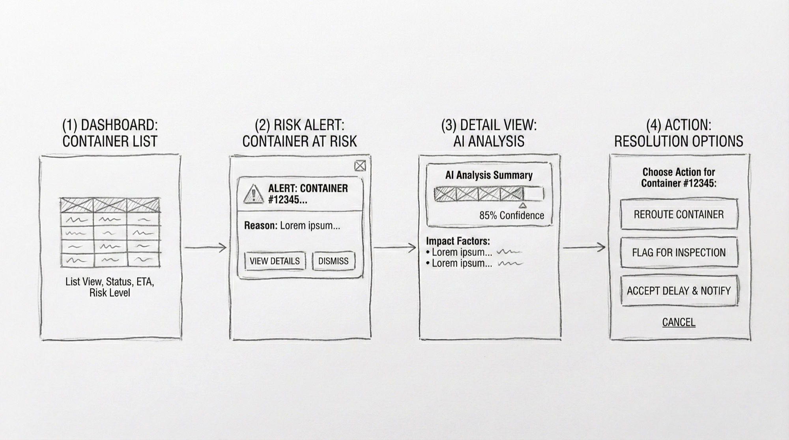
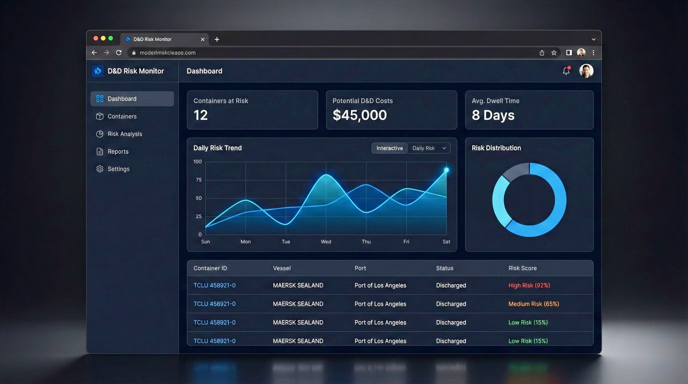
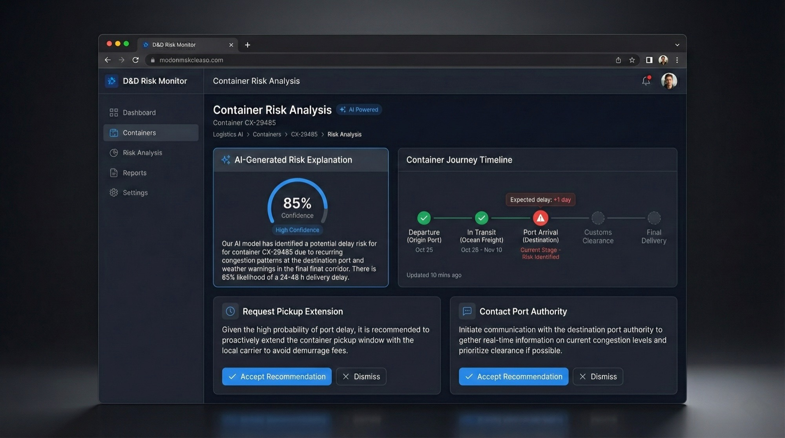

Demurrage & Detention (D&D) Gebühren kosten die Logistikbranche jährlich Milliarden. Das Problem: Die meisten Unternehmen reagieren erst, wenn die Gebühren bereits anfallen.
✦
AI Konzeptprojekt
D&D Risk Monitor
Wie AI Logistikteams helfen kann, Demurrage & Detention-Risiken proaktiv zu managen – mit Fokus auf vertrauenswürdige Human-AI Interaction.
Die Herausforderung
D&D-Gebühren: ein Milliardenproblem
Informationen verstreut
Daten über Container-Status sind über Carrier-Portale, E-Mails, interne Systeme und Häfen verteilt.
Reaktiv statt proaktiv
Teams erfahren oft erst von Problemen, wenn die Free Time bereits abgelaufen ist.
Hohe kognitive Last
Operations-Teams müssen hunderte Container gleichzeitig überwachen – ohne klare Priorisierung.
Komplexe Regeln
Gebührenstrukturen variieren je nach Hafen, Carrier und Container-Typ – schwer zu überblicken.
Jobs to be Done
Was Nutzer wirklich brauchen
Basierend auf Gesprächen mit Operations-Teams und meiner Erfahrung im Logistik-Tech-Bereich habe ich den Kern-Job identifiziert:
„Hilf mir, unnötige D&D-Kosten zu vermeiden, indem du mich frühzeitig warnst und mir hilfst, schnell zu handeln."
Dieser Use Case erfüllt die Kriterien für einen guten AI-Anwendungsfall:
| Kriterium | Bewertung |
|---|---|
| Hohe Frequenz | ✓ Täglich, hunderte Container |
| Großes Problem | ✓ Direkte Kostenwirkung |
| Beschreibbarer Prozess | ✓ Klare Regeln und Fristen |
| Integration möglich | ✓ APIs zu Carrier-Systemen |
Framework-Auswahl
Assistive AI, nicht autonome AI
Für diesen Use Case habe ich bewusst einen assistiven Ansatz gewählt:
| Entscheidung | Wahl | Begründung |
|---|---|---|
| Interaktionstyp | Assistiv | AI empfiehlt, Mensch entscheidet |
| Sichtbarkeit | Semi-sichtbar | Dashboard + Alerts, kein Chat-First |
| Automatisierungsgrad | Level 2-3 | Schlägt Aktionen vor, kann Entwürfe erstellen |
User Flow
Von der Warnung zur Aktion
Der Flow führt Nutzer von der Übersicht gezielt zur Aktion – ohne Umwege:
1. Dashboard
Übersicht aller Container mit AI-generiertem Risiko-Score. Priorisierung auf einen Blick.
2. Risk Alert
Proaktive Benachrichtigung bei erkanntem Risiko. Schneller Einstieg in Details.
3. AI Analysis
Erklärung warum die AI diesen Container markiert hat. Konfidenz-Level sichtbar.
4. Resolution
Konkrete Handlungsoptionen mit AI-Unterstützung. Nutzer behält volle Kontrolle.
Konzept-Screens
Dashboard & Detail-Ansicht

Dashboard mit Container-Übersicht und Risiko-Scores

Detail-Ansicht mit AI-Analyse und Handlungsempfehlungen
AI UX Patterns
Vertrauen durch Transparenz
Um Vertrauen in AI-Entscheidungen zu schaffen, habe ich vier zentrale UX-Patterns angewendet:
Konfidenz-Indikatoren
Zeigt wie sicher die AI-Vorhersage ist. Nutzer können einschätzen, wie viel Gewicht sie der Empfehlung geben sollten.
Erklärbarkeit
Jede AI-Empfehlung zeigt, warum sie getroffen wurde. Keine Black Box.
Human Override
Nutzer können jede AI-Entscheidung überschreiben. Die Kontrolle bleibt beim Menschen.
Progressive Disclosure
Zusammenfassung zuerst, Details auf Nachfrage. Reduziert kognitive Last.
Erkenntnisse
Was ich gelernt habe
- AI sollte den Nutzer befähigen, nicht ersetzen. Assistive AI schafft mehr Vertrauen als vollautomatische Systeme.
- Konfidenz-Level sind essenziell. Nutzer müssen wissen, wie sicher die AI sich ist, um gute Entscheidungen treffen zu können.
- Der Use Case muss zur AI-Technologie passen. LLMs sind stark bei Mustererkennung und Zusammenfassung – weniger bei präzisen numerischen Vorhersagen.
- Prototyping mit AI-Tools (wie Claude) beschleunigt den Designprozess erheblich – von der Idee zum testbaren Konzept in Stunden statt Tagen.